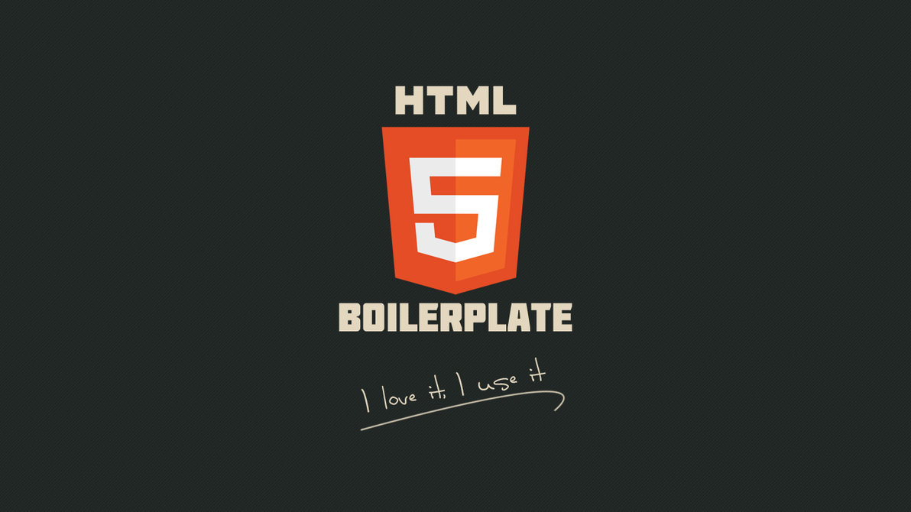
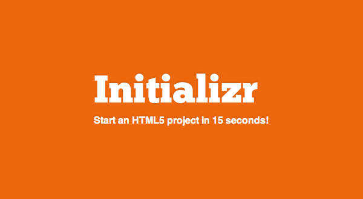
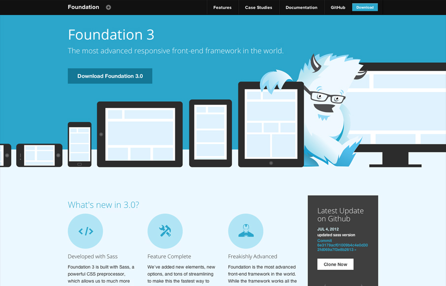
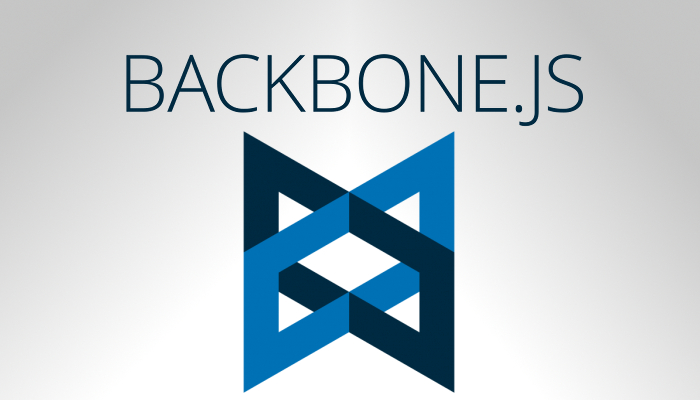

環境建置
在開始開發自己的第一個網站之前，最重要的事就是準備好自己的環境。安裝適合的開發工具和軟體將可以讓自己事半功倍
軟體安裝
一、編輯器
Sublime Text 2
在這邊推薦大家可以使用Sublime Text 2作為前端網頁開發的編輯器。雖然HTML、CSS、JavaScript只要用一般的文字編輯器就可以開始編輯了（如：記事本），但Sublime Text 2除了免費的優點外（免費版偶爾會跳出購買廣告），還可以客製化自己的編輯器（安裝套件、置換主題等），更可以讓開發網站更有效率
二、瀏覽器
Firefox 瀏覽器
由非營利組織Mozilla所開發的瀏覽器，在世界各地擁有廣大的支持者和開發社群，提供相當豐富的Add-on外掛可以安裝使用，也有許多的Theme可以客製化自己的瀏覽器，其中Firebug和Firepath是網站開發者常用的工具
Google Chrome 瀏覽器
由Google開發的瀏覽器，具備速度快及整合Google帳號等優勢，但使用記憶體量較大，目前最新版本有提供跨平台開發的模擬工具，是十分的便捷工具
開發工具
一、前端模版
HTML5 Boilerplate: The web's most popular front-end template
號稱最多人使用的 HTML5 樣板，其提供預先設定好的 HTML5 範本，讓開發者可以不必從無到有建置 HTML5 網站，也協助處理了一些跨瀏覽器的問題

Initializr - Start an HTML5 Boilerplate project in 15 seconds!
Initializr 算是 HTML5 Boilerplate 的進階版，可以讓你點選幾個選項後， 自動生成HTML5專案樣板，並且把專案中各個需要的目錄都建置完成，並生成需要用到的工具（包括Robot.txt、Google Analytics、Modernizr），也可以選擇搭配Twitter Bootstrap或是Mobile-first Responsive使用
二、CSS框架
Twitter Bootstrap 2.3.2
Twitter Bootstrap 3.0.0
Twitter Bootstrap 是由Twitter 公司所開發，是一個功能完整且十分火紅的的Front-End Framework，並提供許多JavaScript的互動機制以及CSS Grid、Responsive Web Design等功能，可以讓開發者免費使用，加快開發速度，快速建構網站基本的雛形，目前已出3.0.0版本，2.3.2仍是較穩定的版本

ZURB Foundation
由ZURB所維護的ZURB Foundation是Twitter Bootstrap外另一熱門的CSS Framework
三、JavaScript Library
jQuery
jQuery是廣受開發者喜愛的JavaScript Library，簡潔語法和易於操作DOM是其特色
四、JavaScript MVC Framework
Backbone.js
Backbone.js 是近來頗受開發者喜愛的 Javascript MVC (Model-View-Controller) 框架 (framework) 之一 ，幾個知名的服務包括 Foursquare、Trello 都有使用其當做開發工具
AngularJS — Superheroic JavaScript MVW Framework
AngularJS 是一個Open Source的JavaScript MVC框架，由Google維護，具有宣告式語法 (Directives)、相依性注入 (Dependency Injection)、雙向資料繫結 (Two Way Data-Binding) 以及關注點分離等特性
參考書籍
雖然網路上已有相當豐富的學習資源，但許多前輩所撰寫的書籍也非常值得參考，透過有系統的學習可以學習前輩的經驗，亦可發現自己的學習盲點，這邊列出筆者閱讀後覺得不錯的參考書籍。不過理論必須與實務結合，不斷實作練習是學習網頁設計、程式開發的不二法門。透過看書、實作的不斷循環才能讓自己進步的更快
前端工程
一、HTML
HTML&CSS：網站設計建置優化之道
本書為筆者目前看過最易於入門且編排最美觀的 HTML/CSS 入門書，主要講述 HTML4 輔以 HTML5 為補充，但卻不失為了解過去連結未來的好書
HTML 5新世代網頁建置：新手也可以快速設計出專業網站
以實際製作專案的方式介紹HTML5，讓學習者可以在學習完後可以對於整體網頁設計有較清楚的觀念
二、CSS
CSS3網頁設計師手札(第四版)
以問答的方式，以CSS3解釋平常網頁設計常見問題，討論完整清晰，易於閱讀
CSS3網頁設計優化：新手也能快速建立跨平台網頁
同樣以完整專案的方式介紹CSS3的實務應用，可以讓學習者更易掌握網站開發流程
三、JavaScript
JavaScript & jQuery: The Missing Manual 國際中文版, 2/e
對於剛入門的朋友來說，使用jQuery來搭配JavaScript來學習更可以觸類旁通，建立比較清楚的觀念。這本書在舉例和說明上清晰易懂，適合入門閱讀
網路資源
資訊相關技術發展日新月異，如果是以資訊產業為職業目標的話，唯有不斷的學習才是保持自己競爭力的最好方法。而網路則是獲取新知的最快速也是最便捷的管道，透過參與虛擬和實體的技術社群不但可以吸取前輩的經驗更可以結交志同道合的學習夥伴，讓學習技術之路不再孤單
線上課程
一、互動式學習
Codecademy: Learn to code
全球最知名的線上免費學習程式設計的網站，目前提供HTML/CSS/JavaScript、jQuery、PHP、Python、Ruby的課程，本課程也將以Codecademy為輔助教學工具